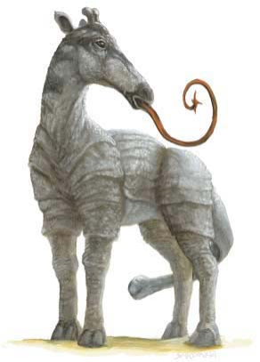

超大型魔法兽

| 生命骰： | 16d10+64（152 生命值） |
| 先攻： | +6 |
| 速度： | 30 英尺 |
| 防御等级： | 30（�C2 体型，+6 敏捷，+16 天生护甲），接触 14，措手不及 24 |
| 基本攻击／擒抱： | +16/+37 |
| 攻击： | 尾击 +21 近战，或舌击 +21 近战 |
| 全力攻击： | 尾击 +21 近战，2 蹄击 +15 近战，或舌击 +21 近战 |
| 伤害： | 尾击 1d10+5，蹄击 1d8+2，舌击见说明 |
| 面宽／触及： | 15 英尺/10 英尺（舌击 15 英尺） |
| 特殊攻击： | 粘附，缠绕，祛魅，汲取魔力，擒抱强化 |
| 特殊能力： | 黑暗视觉 60 英尺，伤害减免10/魔法，侦测魔法，昏暗视觉，法术抗力 30 |
| 豁免： | 强韧 +14，反射 +16，意志 +7 |
| 属性： | 力量 21，敏捷 23，体质 18，智力 5，感知 14，魅力 10 |
| 技能： | 躲藏 �C2，跳跃 +9，聆听 +7，悄然移动 +11，侦察 +7 |
| 专长： | 精通卸除武器，精通击破武器，猛力攻击，武器娴熟，武器专攻（尾击），武器专攻（舌击） |
| 地域： | 任意陆地与地下 |
| 组织： | 独行或成对 |
| 挑战等级： | 17 |
| 宝物： | 无 |
| 阵营： | 总是中立 |
| 进化： | 17�C25 生命骰（超大型）；26�C51 生命骰（巨型） |
祛魅兽是由一群绝望的将军所进行的实验产物，他们需要一种能削弱敌人魔力的战争巨兽。实验进行得过于成功，大量祛魅兽逃脱了创造者的掌控，如今在荒野间游荡，寻找可以吞噬的魔力。
祛魅兽是一种体格强健的四足兽，拥有修长的颈部与头部，粗壮的尾巴末端膨大成一个如人头大小的硬节。其皮肤覆盖银色鳞片，在阳光下闪烁光芒。最显眼的特征是它的舌头，可从口中伸出 15 英尺，极为坚韧且灵活，末端分叉。
天性暴躁的祛魅兽总是饥饿不已。它能在 10 英里之外感知到强烈的魔法灵光，并会被吸引而来。祛魅兽会忽视没有魔法气息的个体，若找不到食物，即使受到攻击也会离去。
祛魅兽在战斗中极其凶猛，专挑负载大量魔法物品的对手。它会优先盯上携带最强大物品的角色，用舌头擒抱并企图增强自身力量。有时它会尝试缴械敌人，叼走某件特别强力的物品，等物品完全失去魔力后再返回继续觅食。
在汲取魔力的过程中，祛魅兽仍可用蹄子与强力的尾巴攻击，并在吞噬时狂乱甩动。它常用舌头擒抱并缠绕对手。
粘附（Adhesive）（Ex）：祛魅兽的舌头覆盖着强力粘液，使其能够牢牢黏住生物或物品以便吞噬。此能力令祛魅兽在擒抱检定与卸除武器检定上获得 +8 加值。
紧勒（Constrict）（Ex）：当祛魅兽在擒抱检定中成功时，它可用舌头缠绕抓住的对手，造成 2d6+6 钝击伤害。
侦测魔法（Detect Magic）（Su）：祛魅兽始终能感知 60 英尺内的任何魔法灵光，并可立刻判定灵光的数量、强度与位置。除此之外，其效果如同侦测魔法法术。
祛魅（Disenchant）（Su）：击中祛魅兽的魔法武器造成正常伤害，但必须进行一次强韧豁免（DC 20），否则其威能会被削弱。豁免失败时，该武器永久失去一个随机决定的特殊能力。若该魔法武器已无特殊能力（或从未拥有过），则祛魅兽永久吸取其 1 点增强加值。以这种方式被祛魅的魔法物品不会给予祛魅兽临时生命值（不同于"汲取魔力"能力，见下）。
汲取魔力（Drain Magic）（Su）：当祛魅兽用舌击命中敌人时，可以选择吸取对方的魔法物品。其影响顺序为：盾牌、盔甲、头盔、手中物品、披风、收纳或入鞘的武器、护腕、衣物、首饰（含戒指）、其余物品。
祛魅兽可选择让舌头黏附在物品上直到完全吸干。每当舌头持续黏附一整轮，祛魅兽便会吸取该物品的一项特殊能力或 1 点增强加值，或消耗 10%�C40%（1d4×10%）的剩余充能（如魔杖类物品）。祛魅兽每吸取一项特殊能力或 1 点增强加值，就获得 10 点临时生命值；每吸取一点充能，获得 1 点临时生命值。
对手可进行一次力量检定（DC 23）以从祛魅兽的粘舌上夺回物品。祛魅兽在黏附期间仍可使用蹄击与尾击进行攻击。
精通攫抓（Improved Grab）（Ex）：若祛魅兽用舌击命中比自身至少小一个体型类别的敌人，它可以作为自由动作尝试发起擒抱，而不会引发借机攻击（擒抱加值 +37，包含粘附加值）。若成功抓住，它在同一轮还会发动紧勒。此后，祛魅兽通常仅用舌头束缚敌人（擒抱检定 �C20，但祛魅兽本身不视为被擒抱状态）。